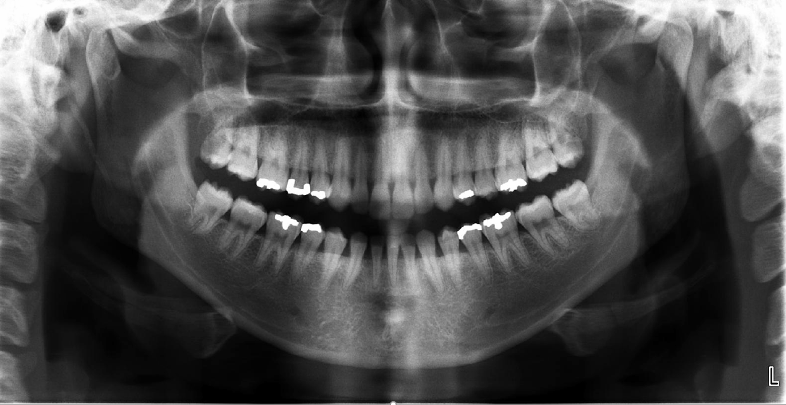
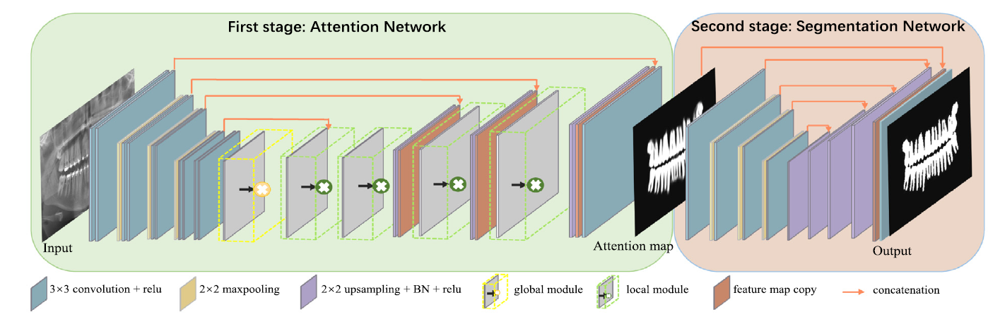

|
李鹏程
副研究员
计算机与科学技术学院 |
个人简介
我2024年12月博士毕业于重庆邮电大学，导师是中山大学智能工程学院高陈强教授。2025年2月到海南大学计算机科学与技术学院任副研究员。
我的主要研究方向是多模态医学图像分析及其在口腔领域的应用，研究兴趣包括但不限于二维、三维图像视频检测、分割，点云分析。
招生说明：如果你想报考我的研究生，请仔细查看我的招生说明，如果你觉得合适，欢迎给我发邮件。
学术新闻
• 02/27, 2025: 1篇合作论文被CVPR 2025顺利接收，恭喜刘川东！🎉🎉🎉
• 05/30, 2024: 1篇论文被IEEE-TMI顺利接收。
• 12/20, 2023: 1篇论文被IEEE-TCSVT顺利接收。
• 05/31, 2022: 1篇论文被IEEE-TMI顺利接收。
• 10/10, 2020: 1篇论文被Knowledge-Based Systems顺利接收。
• 05/30, 2024: 1篇论文被IEEE-TMI顺利接收。
• 12/20, 2023: 1篇论文被IEEE-TCSVT顺利接收。
• 05/31, 2022: 1篇论文被IEEE-TMI顺利接收。
• 10/10, 2020: 1篇论文被Knowledge-Based Systems顺利接收。
论文成果
# 通讯作者； * 同等贡献|
|
|
|

|
Spatial Prior-Guided Bi-Directional Cross-Attention Transformers for Tooth Instance Segmentation
Pengcheng Li, Chenqiang Gao, Chunfeng Lian, Deyu Meng, Yan Yan. IEEE Transaction on Medical Imaging (TMI) [Paper] |
|
|
|

|
THISNet: Tooth Instance Segmentation on 3D Dental Models via Highlighting Tooth Regions
Pengcheng Li, Chenqiang Gao, Chunfeng Lian, Deyu Meng, Yan Yan. IEEE Transactions on Circuits and Systems for Video Technology (TCSVT) [Paper] [Code] |
|
|
|

|
Semantic Graph Attention with Explicit Anatomical Association Modeling for Tooth Segmentation from CBCT Images
Pengcheng Li*, Yang Liu*, Zhiming Cui, Feng Yang, Yue Zhao, Chunfeng Lian, Chenqiang Gao. IEEE Transactions on Medical Imaging (TMI) [Paper] |
|
|
|
|

|
TSASNet: Tooth segmentation on dental panoramic X-ray images by Two-Stage Attention Segmentation Network
Yue Zhao*, Pengcheng Li*, Chenqiang Gao, Yang Liu, Qiaoyi Chen, Feng Yang, Deyu Meng. Knowledge-Based Systems (KBS) [Paper] |
|
|
科研项目
| •国家自然科学基金面上项目，62176035，红外与可见光双模复原与融合方法及应用研究，在研，参与。 |
课程教学
| 2024-2025(S2) | TBD | TBD |
社会服务
审稿服务
| IEEE Transaction on Medical Imaging (TMI) | 2022 |
©李鹏程
本页点击量人次
网站访客数人次

本页点击量人次
网站访客数人次